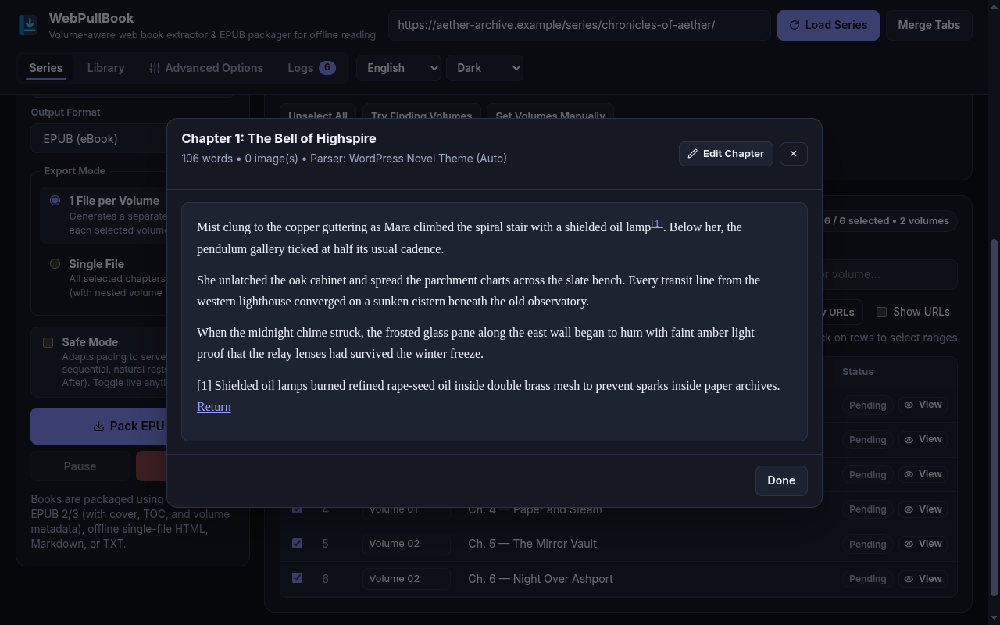

1. Download the Release
Download the latest release package from GitHub Releases and extract the folder on your computer.
WebPullBook is an open-source browser extension (Web-to-EPUB) written in native JavaScript with zero runtime dependencies. It extracts web novels, light novels, fanfiction, articles, documentation, and open tabs into volume-organized EPUB 2, EPUB 3, HTML, Markdown, and TXT files for Kindle, Kobo, Calibre, and local reading.




WebPullBook requires no build step or package manager. Follow these three steps to start exporting books:
Download the latest release package from GitHub Releases and extract the folder on your computer.
chrome://extensions/, enable Developer mode, click Load unpacked, and select the extracted folder.about:debugging#/runtime/this-firefox, click Load Temporary Add-on..., and select manifest.json (or the .zip file).Open a book's index or chapter page, click the WebPullBook icon in the toolbar, choose a Reader Profile (such as Kindle or Kobo) and output format, and click Pack EPUB.
All extraction, HTML sanitization, image handling, and ZIP packaging run locally inside the browser.
Captures the live DOM from the active browser tab to reuse already-loaded content. When a site relies on client-side JavaScript rendering, it can render chapters through a single reusable background tab with an anti-bot pause guard.
Combines dedicated DOM adapters with a heuristic extractor that detects chapter lists, prose containers, sequential "Next Chapter" links, and volume headings—plus a visual 🎯 Pick selector tool for custom layouts.
Pre-configured profiles adjust EPUB standard (EPUB 2 for Amazon Send to Kindle or EPUB 3 for Calibre USB and Kobo), pop-up footnotes, image resolution (1200px or 1080px), and typography in one selection.
Preview and edit chapter text before packing, merge chapters or open browser tabs (Merge Tabs), and automatically generate a default cover with the WebPullBook emblem and book title whenever a page has no original cover.
Detects image formats via binary magic bytes, skips HTML error responses disguised as images, retries failed image requests without credentials, preserves animated GIF/APNG/WebP, and deduplicates identical images across URLs by content hash.
Adaptive Safe Mode adjusts request delays to server latency and honors Retry-After headers. Downloaded chapters are cached locally in IndexedDB for 7 days, and the Library tracks unread chapters across saved series.
WebPullBook exports to four standard formats depending on where you read or archive content.
| Format | Extension | Structure & Features | Typical Use |
|---|---|---|---|
| EPUB 3 | .epub |
OCF container, nav.xhtml + toc.ncx, belongs-to-collection series metadata, pop-up footnotes (aside epub:type="footnote"), cover, Information Page, and End-of-Book page. |
Kobo, Calibre (KFX/AZW3 USB transfer), Apple Books, Thorium Reader, mobile EPUB readers. |
| EPUB 2 | .epub |
XHTML 1.1 chapters, classic toc.ncx + start-of-book HTML Table of Contents, automatic WebP/AVIF to JPEG conversion, and 1200px/1080px image resizing. |
Amazon Send to Kindle (email/web/app cloud converter) and older e-readers. |
| Single-File HTML | .html |
Standalone offline HTML document with embedded cover, navigable Table of Contents, and responsive reader CSS. | Reading directly in desktop or mobile web browsers. |
| Markdown & Plain Text | .md / .txt |
Formatted headings, paragraphs, scene breaks, and metadata header without web navigation clutter. | Obsidian, Logseq, text editors, and plain-text archives. |
Brief answers regarding reader compatibility, privacy, and site configuration.
For Amazon Send to Kindle (email, web, or app), select Kindle (Legacy), which generates classic EPUB 2 with 1200px JPEG images to avoid cloud conversion rejections. For Calibre (USB / KFX / AZW3), select Kindle (Modern) for EPUB 3 and pop-up footnotes. For Kobo, Tolino, or PocketBook, select Kobo & E-Readers (EPUB 3 with 1080px full-color image optimization).
The WebPullBook browser extension has no backend server, no telemetry, and no analytics. All HTML parsing, XHTML sanitization, image processing, and ZIP/EPUB packaging run locally in your browser, and network requests go directly from your browser only to the origin websites you choose to extract. Separately, this public documentation website uses GoatCounter for privacy-friendly, cookieless aggregated visit counts without personal tracking. See the Privacy Policy for details.
WebPullBook extracts standard DOM HTML text accessible in your browser session (Central Novel, Royal Road, Novel Mania, Scribble Hub, NovelBin verified end-to-end, plus generic heuristic and SPA tab modes). Known limitations tracked in docs/COMPATIBILITY.md: Proprietary DRM platforms, <canvas> or scrambled-image chapters, Locked paywalls without session access, Hard non-bypassable anti-bot / CAPTCHA gates.